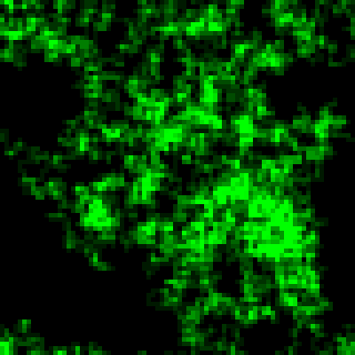

Solution for Programming Exercise 4.6
This page contains a sample solution to one of the exercises from Introduction to Programming Using Java.
Exercise 4.6:
The sample program RandomMosaicWalk.java from Section 4.7 shows a "disturbance" that wanders around a grid of colored squares. When the disturbance visits a square, the color of that square is changed. Here's an idea for a variation on that program. In the new version, all the squares start out with the default color, black. Every time the disturbance visits a square, a small amount is added to the green component of the color of that square. The result will be a visually interesting effect, as the path followed by the disturbance gradually turns a brighter and brighter green.
Write a subroutine that will add 25 to the green component of one of the squares in the mosaic. (But don't let the green component go over 255, since that's the largest legal value for a color component.) The row and column numbers of the square should be given as parameters to the subroutine. Recall that you can discover the current green component of the square in row r and column c with the function call Mosaic.getGreen(r,c). Use your subroutine as a substitute for the changeToRandomColor() subroutine in the program RandomMosaicWalk2.java. (This is the improved version of the program from Section 4.8 that uses named constants for the number of rows, number of columns, and square size.) Set the number of rows and the number of columns to 80. Set the square size to 5.
By default, the rectangles in the mosaic have a "3D" appearance and a gray border that makes them look nicer in the random walk program. But for this program, you want to turn off that effect. To do so, call Mosaic.setUse3DEffect(false) in the main program.
Don't forget that you will need Mosaic.java and MosaicCanvas.java to compile and run your program, since they define non-standard classes that are required by the program.
This is an exercise in making a rather small modification to a relatively complicated existing program.
The only real problem is to write a new subroutine, which I will call brightenSquare. Much of the program comes directly from RandomMosaicWalk2.java. The randomMove() routine is unchanged. The important changes in the main() routine are to substitute a call to brightenSquare for the call to changeToRandomColor and to add the line calling Mosaic.setUse3DEffect. I also removed the call to Mosaic.delay to speed up the program. The subroutines fillWithRandomColors and changeToRandomColor in the RandomMosaicWalk2 program are not needed in the new program and should be removed. In the three lines that define the constants, the values are changed according the instructions in the exercise:
final static int ROWS = 80; // Number of rows in the mosaic. final static int COLUMNS = 80; // Number of columns in the mosaic. final static int SQUARE_SIZE = 5; // Size of each square in the mosaic.
With these values, the program is interesting to watch for a while. You might want to try using shades of red, blue, or gray, instead of green. Or even use three disturbances, one incrementing the red component of the color, one incrementing the green component, and one incrementing the blue.
An outline for the brightenSquare routine is clear, remembering that the green component can't be more than 255:
Let g be the current green component of the square
Add 25 to g
If g is greater than 255
set g = 255
Set the color components of the square to 0, g, 0
The red and blue components of the color will always be zero. However, they must be specified in the Mosaic.setColor() routine. Written in Java, the body of the routine is just three lines long:
static void brightenSquare(int row, int col) {
int g = Mosaic.getGreen(row,col);
g += 25;
if (g > 255)
g = 255;
Mosaic.setColor(row,col,0,g,0);
}
Here's a screenshot from my program after it was allowed to run for a while:

/**
* This program opens a Mosaic window that is initially filled with black.
* A "disturbance" moves randomly around in the window. Each time it visits
* a square, the green component of the color of that square is increased
* until, after about ten visits, it has reached the maximum possible level.
* The animation continues until the user closes the window.
*/
public class RandomBrighten {
final static int ROWS = 80; // Number of rows in the mosaic.
final static int COLUMNS = 80; // Number of columns in the mosaic.
final static int SQUARE_SIZE = 5; // Size of each square in the mosaic.
static int currentRow; // Row currently containing the disturbance.
static int currentColumn; // Column currently containing disturbance.
/**
* The main program creates the window, fills it with random colors,
* and then moves the disturbance in a random walk around the window
* as long as the window is open.
*/
public static void main(String[] args) {
Mosaic.open( ROWS, COLUMNS, SQUARE_SIZE, SQUARE_SIZE );
currentRow = ROWS / 2; // start at center of window
currentColumn = COLUMNS / 2;
Mosaic.setUse3DEffect(false);
while (Mosaic.isOpen()) {
brightenSquare(currentRow, currentColumn);
randomMove();
Mosaic.delay(1);
}
} // end main
/**
* Add a bit of green to the rectangle in a given row and column.
* Precondition: The specified rowNum and colNum are in the valid range
* of row and column numbers.
* Postcondition: The green component of the color of the square has
* been increased by 25, except that it does not go
* over its maximum possible value, 255.
*/
static void brightenSquare(int row, int col) {
int g = Mosaic.getGreen(row,col);
g += 25;
if (g > 255)
g = 255;
Mosaic.setColor(row,col,0,g,0);
}
/**
* Move the disturbance.
* Precondition: The global variables currentRow and currentColumn
* are within the legal range of row and column numbers.
* Postcondition: currentRow or currentColumn is changed to one of the
* neighboring positions in the grid -- up, down, left, or
* right from the current position. If this moves the
* position outside of the grid, then it is moved to the
* opposite edge of the grid.
*/
static void randomMove() {
int directionNum; // Randomly set to 0, 1, 2, or 3 to choose direction.
directionNum = (int)(4*Math.random());
switch (directionNum) {
case 0: // move up
currentRow--;
if (currentRow < 0)
currentRow = ROWS - 1;
break;
case 1: // move right
currentColumn++;
if (currentColumn >= COLUMNS)
currentColumn = 0;
break;
case 2: // move down
currentRow ++;
if (currentRow >= ROWS)
currentRow = 0;
break;
case 3: // move left
currentColumn--;
if (currentColumn < 0)
currentColumn = COLUMNS - 1;
break;
}
} // end randomMove
} // end class RandomBrighten